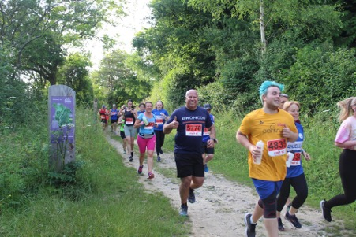
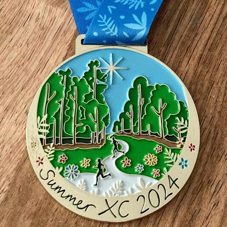

Summer Cross Country
The Portsmouth Joggers Summer Cross Country Race (SXC) is an annual event organised by Race Directors Tony Quinn, Ally Smith, and Sue Clarke. It takes place on a Wednesday evening in June or July each year at the beautiful Queen Elizabeth Country Park.
It is a 5-mile hilly route; so, not for the faint hearted, but it is incredibly fun! After the race, participants can enjoy refreshments from a burger van, often an ice cream truck, and of course plenty of socialising.
A few training sessions take place over the weeks prior to the race, which are open to all, with both a running and a walking/jeffing group, guiding you round the course, with sweeties to finish.
Each year, a portion of the race proceeds is donated to a local charity. The 2024 donation went to Cycling Without Age.
2025 Race Information
- Race date
- Wednesday, 2nd July 2025
- Entries open
- TBC
- Training starts
- TBC
- Latest updates
- See Facebook or email questions to sxc@pjc.org.uk

Participants in the 2024 Summer Cross Country

The 2024 Summer Cross Country medal